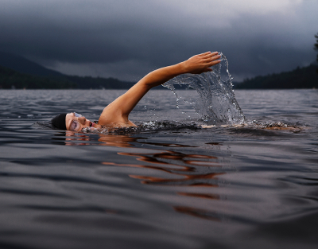

Is it absolutely necessary to exercise to lose weight on the keto diet? No. In fact, there is a way to figure that into your macros on the keto diet. But exercise helps in various ways...
Regular exercise of course helps you lose weight by burning more of the calories that you are consuming. It also boosts your metabolism which helps to keep your energy higher for longer periods of time.
Exercising while on the keto diet means you can burn fat even faster than not exercising. If you choose to go this route or change to a heavier exercise routine remember to factor that information in on the keto calculator so make sure you have the right balance of macros.
Something else to consider:
When I started losing weight on the keto diet I was not exercising. I lost 50 lbs in about five months. Since I wasn't exercising the areas where I lost most of my weight still had what I describe as "floppy" skin. Those areas were where the fat had stretched the skin out. But since I hadn't exercised to keep everything tight the skin just kind of hung there. If you're only thinking of losing 10 lbs then it shouldn't be that noticeable. However, if you're looking to lose a substantial amount of weight you will most likely want to exercise to avoid the "floppy" skin that I discovered.
 Like so many things this depends on the person. Many people in the fitness world have said swimming is one of the best all encompassing exercises because it is low-impact, works multiple muscle groups at once, and works cardio-vascular. Exercise doesn't have to be a heavy regement of going to the gym or running marathons. If those are things you enjoy then have at them. But if you don't enjoy lifting and running you can do things like taking an evening or morning walk.
Simple changes to your daily routine can make a drastic difference. If you work in a building with multiple levels you can get off the elevator a floor before yours and walk the stair for the last floor. Enjoy a bike ride or play some tennis. Have friends that are into flag football? Grab a game with them. Even playing with pets can get you moving a bit more.
Stop cheating yourself. By making excuses you only hinder yourself. Exercise may be difficult at first (especially if it's been a while), but the more you do it the easier it will become. And you will feel better.
There are always ways to find time to exercise. Even if you can only devote 10 minutes a day it's more than nothing. I won't go into an exhaustive list here since there are several websites dedicated to things like mini-workouts.